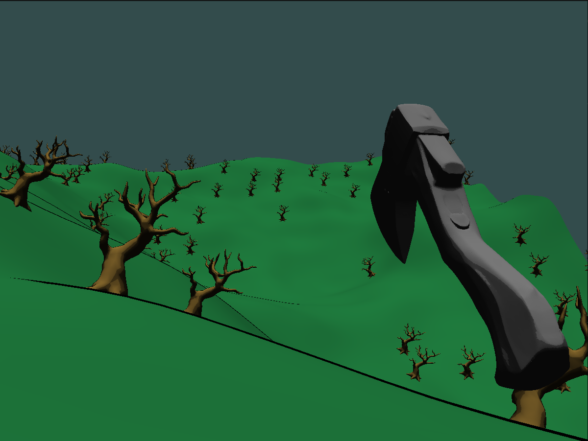
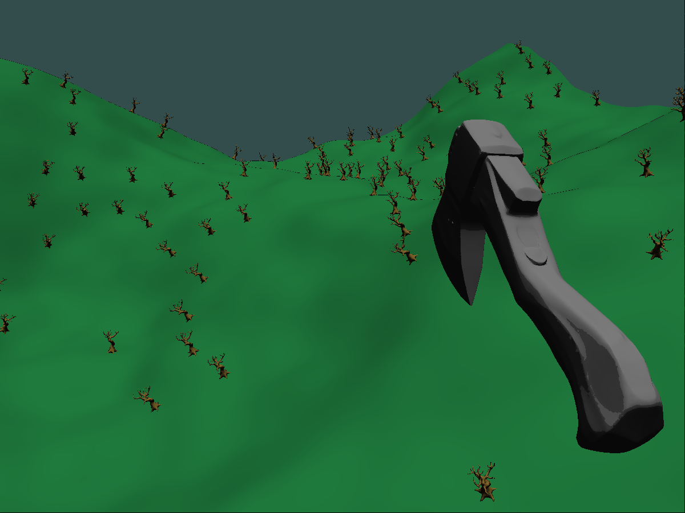
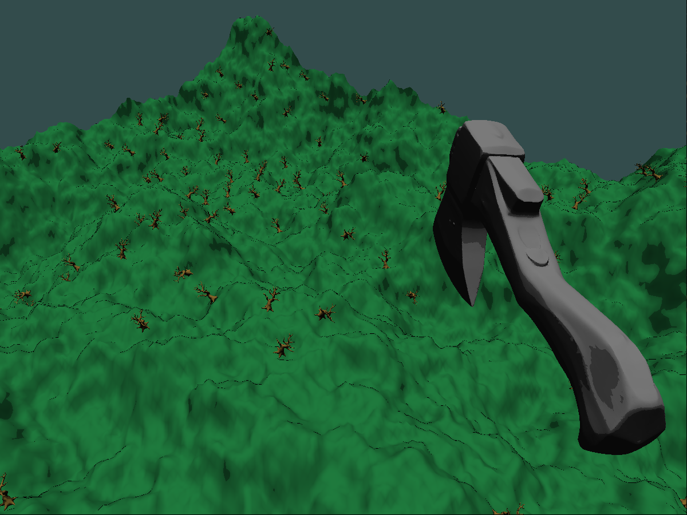

Final Project Progress Report
Project Description
My project is another game, with non-photorealistic shading, and procedural generation. I am working on this project by myself. Some of my goals for the project are to get fully procedural terrain with multiple chunks, an interesting non-photorealistic shader, and some sort of goal for the game. I found interest in this game with lots of Youtube videos of procedural generation of voxels. I am doing a similar technique to most, but with smooth terrain instead of voxels.
Progress Plan/Update
I have worked on it quite a bit and I currently have a single procedurally generated chunk with proceedurally generated trees. The terrain is smooth and the trees match the normals of the terrain. I also have a working movement system, but my collisions are not quite right. I think that the reason my collisions are not working right now is the hitboxes are not lined up with the normals of the trees. This causes me to be hitting early on one side and late on the other.
Some milestones that I have for the next couple of weeks are to implement some sort of goal, and incentive. I am thinking that you could chop down the trees and collect wood to sell and upgrade for better tools. Another milestone would be to get the collisions working. I think I need to calculate the hitboxes based on the rotated space and it should work.
Images


